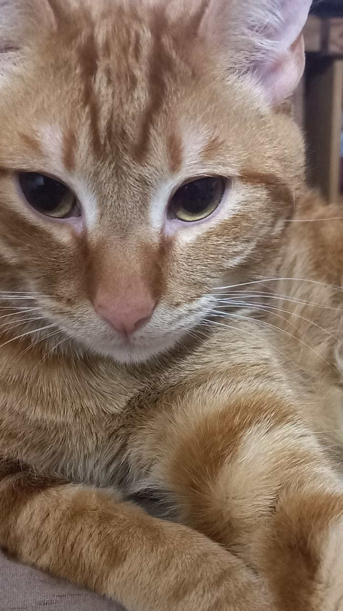

Grupo 5
Proyecto Frontend
Perfil de Nahir
Backend Developer del equipo

Nahir Icare
Project Manager
Rio Negro, Argentina
31 años
Estudiante de la Tecnicatura en Desarrollo de Software, con foco en la planificación, organización y seguimiento de proyectos. Como Project Manager, me encargo de coordinar al equipo, organizar las tareas y asegurar que cumplamos los plazos y objetivos definidos.
Gestión de proyectos
- Organización y planificación
- Comunicación efectiva
- Trabajo en equipo
- Resolución de problemas
Hacé click en las cartas para descubrir más
Películas Favoritas
- Misery
- Se7en
- El silencio de los inocentes
- V/H/S
Actividades Favoritas
- Trekking en la montaña
- Andar en Bicicleta
- Ver películas
Música Favorita
- Iron Maiden
- Megadeth
- Metallica
Esta es mi mascota, se llama Mordelón
Aportes al Proyecto
- Coordiné la distribución de tareas entre los integrantes.
- Organicé el cronograma de entregas según los tiempos de la materia.
- Supervisé la correcta aplicación de los requerimientos del TP.
- Apoyé al equipo en la documentación y bitácora del proyecto.
Marca Personal 🚀
Soy fundadora de Foxy Dev, mi marca freelance para crear soluciones digitales.